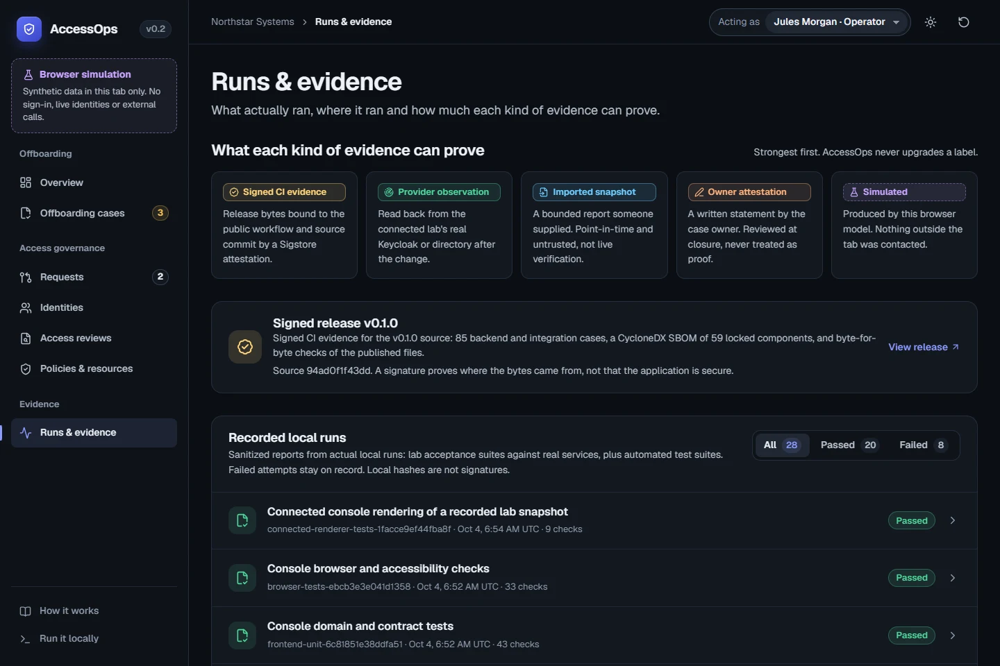

AccessOps
When someone leaves, disabling one account is the easy part. AccessOps turns an HR departure into a case with an owner, a four-hour target and a required action for every system the person could still reach, and it closes only on independent review.
Problem
Can this departure ticket be closed, and what actually proves it?
Approach
Contain from a signed HR event, account for every system, close on someone else's review.
Evidence
HR event to every token refused in 2.6 s; Keycloak 18/18, Samba 28/28; signed v0.3.0 release.
Project status
Local reference lab and public demo. Synthetic data; Entra tested in a free test tenant only.

Implementation used AI coding agents under my direction. I set requirements, chose the design and directed review; the recorded checks are builder-led.
Decision I directedBuild around one concrete job, closing an employee or contractor departure across systems, and keep simulated, imported, attested and observed evidence visibly distinct, all reproducible without a paid tenant.
The problem
Offboarding usually ends with someone disabling the main account and closing a ticket. The person may still hold group memberships, cloud sessions, repository access, shared credentials and data that nobody has handed over.
AccessOps makes that gap visible. Each departure becomes a case with nine required actions (ten when the person has an enrolled directory account), and every action records where its evidence came from. Unknown never counts as removed. A signed HR event can open the case and contain access without waiting for anyone.
How a case closes
Everything runs on loopback in a local Docker lab. The public demo is a separate browser simulation of the same case rules and never calls the lab.
Explore the case flow Choose a stage
Stage 01 / Contain
Can the person still act in this system right now?
One transaction revokes the person's grants and suspends the agents they sponsor. Keycloak removals are queued for every known managed grant, including ones revoked earlier; an enrolled directory account is disabled and removed from its mapped groups. The person's Keycloak sessions end too, which signs them out of apps that accept back-channel logout, and apps that check tokens themselves get a signed revocation event and refuse the person's earlier tokens.
Containment stops new local actions. It does not recall work an agent already started.
Stage 02 / Read back
Did the provider actually change?
The worker reads before it retries and records when each reading was taken. A disabled account and each removed membership need their own fresh observation; directory writes target immutable GUIDs and update account flags atomically. For a day afterward, the person's sign-ins are read as well; any success adds an investigation the case can't close without.
Readings older than two hours, unknown or partial results reopen the action.
Stage 03 / Account for the rest
What about Entra, GitHub, Microsoft 365 and shared credentials?
An enrolled Entra account is disabled, removed from its groups and has its sign-in sessions revoked through Microsoft Graph, then read back. For other platforms, bounded reports are imported for explicitly bound account IDs, never matched by name or email. Work no report can prove becomes a written owner statement, labeled as such.
Absence from a GitHub list is unknown, not removed. Entra state does not prove application sessions ended.
Stage 04 / Close
Who can say the case is done?
A reviewer who neither owns the case nor submitted evidence accepts the exact revision and packet hash. The closed packet cannot be changed afterward.
Closure is an administrative record of reviewed evidence, not proof that every copy or session is gone.
Design decisions & tradeoffs
Evidence labels that never upgrade
Every action shows one of five sources: signed CI evidence, provider observation, imported snapshot, owner attestation or simulated. Each has a fixed icon, label and color. A statement can't become proof, and a browser reading can't pass for a lab one.
Approvals bound to the exact change
Access grants need an independent approver whose decision binds the exact change and policy version and expires after 15 minutes. Containment acts immediately. Policy outages and unknown connector results deny.
Least privilege in the directory
The directory connector can change only two properties on the exact objects created for it. Live checks confirm it cannot disable or edit canary accounts outside that scope, and the app never receives administrator credentials.
An interface built around the next step
Each case shows one next step. When the current role can't take it, the case says who can instead of hiding the button. Dark and light themes share one token set, and automated WCAG checks run on every page in both.



Recorded results
Local lab runs on October 5, 2026 with synthetic records, plus GitHub CI for the signed v0.3.0 release. Builder-led checks, not an independent evaluation.
- 2.6 sfrom a signed HR event to the case opened, sessions ended, the person signed out of an app and their unexpired token refused
- 22/22session checks before and after containment, including a token an app checks itself, refused 3 s after containment
- 32 sto detect a sign-in after departure, block the case and send a signed event to a SOC tool
- 14/14operator sign-in checks: a one-time code is required; a wrong code or a request lowered to password-only is refused
- 13/13live key-rotation drill: no valid token refused; a leaked key's forged token refused within 60 s of the key's removal
- 28/28directory-case checks against a Samba AD-compatible lab: new LDAPS and Kerberos logins denied after offboarding, plus 6/6 on sessions held from before
- 11/11live Microsoft Entra checks in a free test tenant: account disabled, group removed and sessions revoked through Graph, read back in 20 s
- 372backend and integration cases in the signed CI run, with provenance and SBOM verified
Signed v0.3.0 release · Verification ledger · Recorded runs in the demo
What the live runs caught
Disabled, but still in the group
An early end-to-end run disabled the Keycloak account but left a managed group membership behind. Offboarding now queues a removal for every known managed grant, including historical ones, and each needs its own fresh negative reading before the case can close. The failed run stays published next to the fix.
Disabled, but still signed in
Measured before and after: disabling the account stopped new tokens, but the person stayed signed in to the lab app and Keycloak still held the session. Containment now ends sessions and sends back-channel logout. An app that checks tokens itself still accepted the last one for two minutes, so it now follows a stream of signed revocation events and refuses it about 3 seconds after containment.
A leaked key fools the identity provider too
A live drill published a signing key, as if it had leaked, and forged a token with it. Keycloak's own introspection accepted the forgery while the key was published, so removing it is the only remedy; apps now drop a removed key within 60 seconds instead of five minutes. The drill also showed that switching keys at once refused valid tokens for 30 seconds, so rotation now publishes the new key first.
Kerberos tickets outlive the account
After offboarding, the directory refused new service tickets, but connections and tickets the person already held kept the removed group's rights until they expired, up to 10 hours. Kerberos has no per-user revocation, so the case now states when that access ends instead of implying it is gone.
A failed test that was right
The first post-departure check flagged the test's own sign-in, made seconds after a departure time the test had backdated. A sign-in after the effective time, even before containment finishes, is access after departure, so the test changed, not the rule.
Limits and next steps
- Microsoft Entra was tested only in a free test tenant with synthetic users; Microsoft 365 and GitHub appear as offline fixtures and owner statements.
- Samba results do not prove Microsoft Active Directory interoperability.
- An app that checks tokens itself refuses a leaver's token early only if it follows AccessOps' revocation signals. Directory connections and Kerberos tickets from before containment keep working until they expire, up to 10 hours.
- Operators use a software one-time-code authenticator, not a phishing-resistant key.
- This is a reference system with synthetic data, not a production deployment or a certification.
AI use. AI coding agents wrote much of the code and documentation under my direction. The application itself doesn't use a language model; its review assistant is deterministic and can only propose, never approve.
Discuss AccessOps
Ask about the membership that survived account disable, the leaked-key drill or how a case reaches closure.